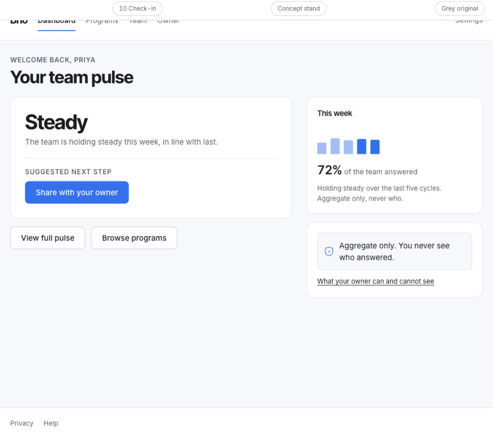

Organism
Hero
The first thing on a public page: a heading, a sentence, an action, and sometimes an image beside them.
Anatomy
Wellbeing that actually runs
Brio tells you what to run and when, and shows the team you already have, without ever showing you a single person’s answer.
.wf-herothe block, with the marketing display step on its heading.wf-hero h1the heading, at the hero step, which the product interior never uses.wf-hero .wf-leadthe sentence under it.wf-hero-gridthe two column composition, copy beside a visual
Variants and sizes
Content
Two: copy alone, or copy beside a visual. The visual appears where the page has to show what the product is, not only say it.
Pricing
Free up to ten people.
copy only
a secondary public page
Wellbeing that actually runs
Nobody sees who answered what.

copy and visual
the home page
The empty cells, and why they are empty
No emphasis axis. There is one hero per page and nothing to compare it against.
When to use it
Twelve public screens. It is where the product is explained, which is also the only zone where photography is allowed: attribute A5 is carried on the outside, and the operator and employee interior stays free of it.
The rule, and the anti rule
Do this. One heading, one sentence, at most two actions, and the first of them is the solid one.
Not this, use Card instead. Inside the product, the top of a screen is not a hero. An operator screen opens with its own h1 from base.css and goes straight to a Card.
States
No states: this component is not interactive. Not interactive: the buttons inside it are Buttons. Under 760px the grid collapses to one column and the visual goes below the copy.
Technical
| Level | 3, organism |
|---|---|
| File | design/system/components/hero.css |
| Roles it reads | none, geometry only |
| In the product | 12 of 99 screens |
| In colour | 2 screens: contact, index |
Markup to copy
<div class="wf-hero"><h1>Wellbeing that actually runs</h1><p class="wf-lead">Brio tells you what to run and when, and shows the team you already have, without ever showing you a single person’s answer.</p><div class="wf-btns"><a class="wf-btn solid" href="#">Start free</a><a class="wf-btn" href="#">See how it works</a></div></div>